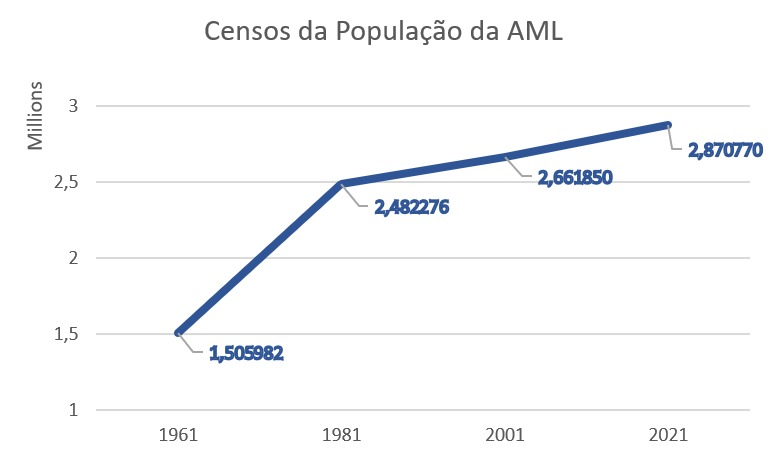
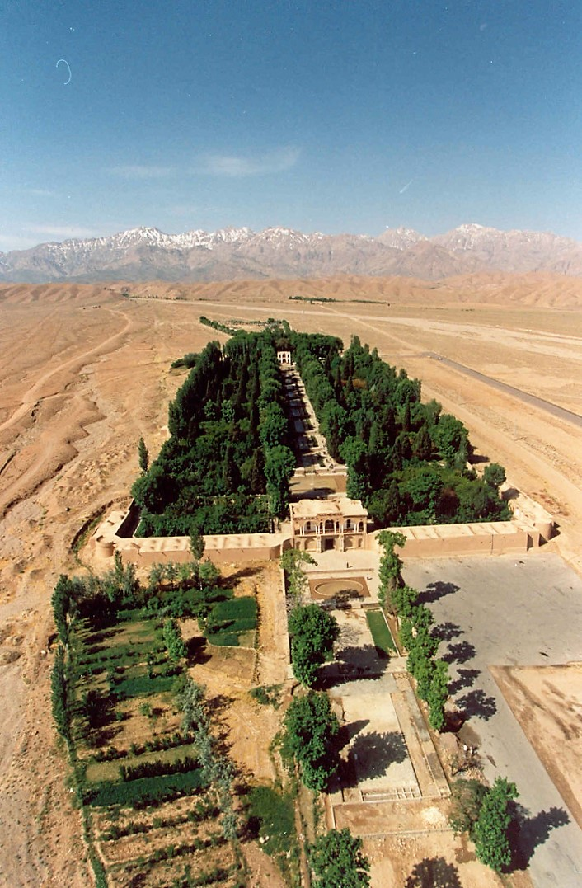
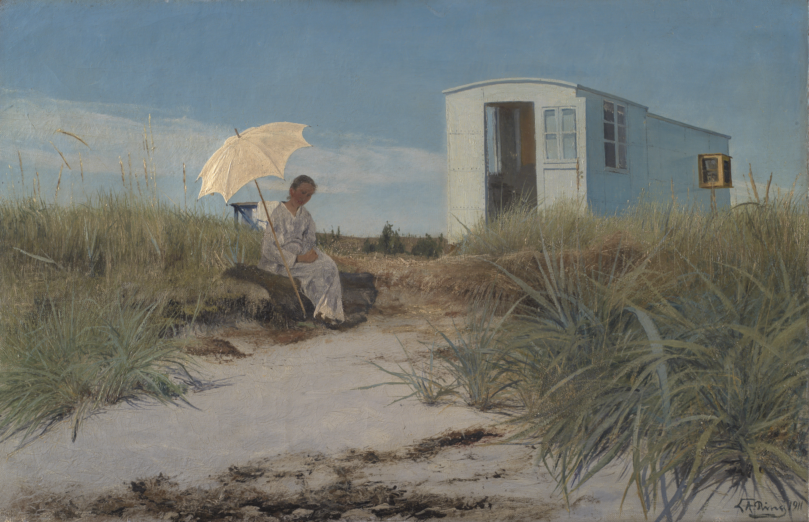
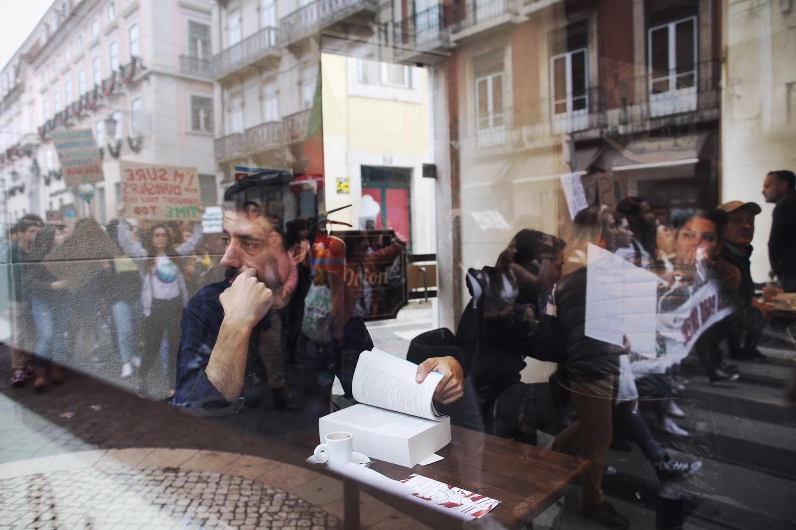
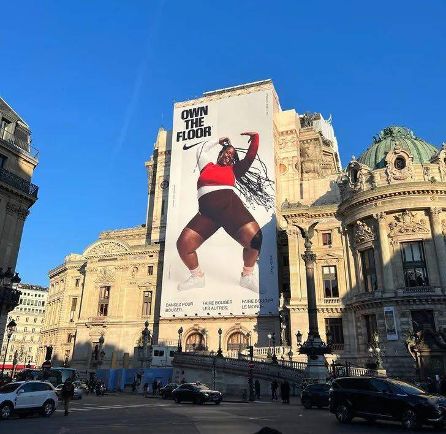

Notes From The Underground - IV
We and our animal cousins are quickly alerted to signs of opportunities to mate or to feed, and advertisers design billboards accordingly. [Daniel Kahneman (2011), Thinking, Fast and Slow]
[Time Marketing]
Michel Houellebecq's sixth novel, Soumission, was published today, January the 7th, in France.
According to it, the leader of France's Muslim party has beaten the far-right Front National in the Presidential election, women abandon Western dress and leave work, non-Muslim teachers are forced out of their jobs and polygamy is reinstated: this is France in 2022.
When confronted with accusations of Islamophobia, Houellebecq claimed that he was not writing out of fear and that "things don't go all that badly" in the book, except if you were a "feminist".
The Independent (2015)
Also today, January the 7th, at least 12 people have been killed in a shooting incident at the Paris office of French satirical weekly Charlie Hebdo.
Video footage posted to social media showed armed gunmen running through the streets of Paris, shooting with automatic weapons and shouting "Allahu Akbar".
According to an eye-witness, one of the gunmen shouted: "The Prophet is avenged."
The Independent (2015)
"I accelerate history, but no, I can't say that the book is a provocation; if that means saying things I consider fundamentally untrue just to get on people's nerves. I condense an evolution that is, in my opinion, realistic."
[Michel Houellebecq (2015)]
Na primeira década do século XXI, o PIB per capita da Área Metropolitana de Lisboa (AML) havia baixado de um índice que se aproximava dos 120 no ano 2000 (face uma média de 100 de todas as regiões da UE) para 116 em 2010. Mas no decurso da segunda década, este indicador irá baixar de forma acentuada, passando para um nível próximo de 100 em 2017. Os dados provisórios mais recentes mostram, contudo, perspetivas de uma ténue melhoria para os anos de 2018 e de 2019 (com um índice de cerca de 101 e de 102, respetivamente). Portanto, a AML apresenta desde o inicio do século uma trajetória de divergência face ao crescimento económico médio das regiões europeias. O que, a par de uma aproximação aos níveis médios das restantes regiões portuguesas, fez com que no documento Estratégias AML para 2030 se denominasse esta trajetória de «um processo de coesão de convergência não virtuoso». [Lisboa em Metamorfose (2021), João Seixas]  População da Área Metropolitana de Lisboa - 1961 a 2021 (Censos)
[A Futile Struggle]
After more than 30 years of liberal and libertarian political activity, including personal contacts with federal ministers, the following became clear to me: my classic liberal/liberal convictions that freedom, self-determination but also personal responsibility are the values that enable a life of prosperity and satisfaction are not shared by the majority.
Nowhere, in any system, not even in the USA or Switzerland.
It is therefore a futile love struggle to convince democratic societies of the merits of these values.
Those who promise free services, redistribution and extensive social security will always win the elections.
Always and everywhere. Over time, this will lead to exploding national debt, over-regulation, incapacitation and infantilization of citizens.
Such long-term considerations, however, do not usually play a role in election decisions.
Liberal or libertarian parties must therefore also transform themselves into redistributive parties if they want to survive in democracies.
After a certain period of time, they can hardly be distinguished from their competitors.
[Titus Gebel (2019), CEO of Free Private Cities]
The word "paradise" entered English from an Old Iranian form, meaning "walled enclosure". By the 6th/5th century BCE, the Old Iranian word had been borrowed into Assyrian. It subsequently came to indicate the expansive walled gardens in the First Persian Empire, and was subsequently borrowed into Hebrew as "pardes" and into Greek as "parádeisos", park for animals. In the Septuagint (3rd–1st centuries BCE), Greek "parádeisos" was used to translate both Hebrew "pardes" and Hebrew "gan" (garden): it is from this usage that the use of "paradise" to refer to the Garden of Eden derives. (2019)  Bāgh-e Shāzdeh Mahan
Pale males are the last group it’s OK to vilify. I am hideously white. The BBC was called hideously white by its former boss Greg Dyke, and the West End stage hideously white by Andrew Lloyd Webber. This week the Football Association was dismissed by critics as a bunch of “old white men”. Note that it is not the BBC or the theater that is hideous, but their whiteness. Such are the routine humiliations of my group. Fashion in collective abuse seeks comfort in crowds. In choosing pale males for ritual contempt, identity politics has found a target that it hopes will confess its “guilt”. Were someone such as I to take offence, demand redress or protected space, I would be bidden to shut up, get a life and not be so sensitive. I might turn to Kant and universalize the judgment. What if I were to follow “hideously” with black, female, Jewish, Arab, obese, disabled or Welsh? I doubt there are many selection panels that do not instinctively mark down any pale male applicant. The chair begins: “Yes, he may the best candidate, but…” And the gods of discrimination look down from on high and wag a stern finger. “White males” cruise the jobcentres and head-hunters like ancient sharks, as if looking for a quiet beach on which to die. Simon Jenkins (2016)
[review of the book Fahrenheit 451 (1953), by Ray Bradbury]
A society can be a dystopia and doesn't know it: maybe, it doesn't even care! Montag, Fahrenheit's improbable hero, isn't concern with some ruthless political elite, he just wants to rouse his wife, himself and ultimately, his technologically advanced community, from theirs intellectual alienation.
His awakening is a thrilling story, full of powerful metaphors and a perfect climax.
Ray Bradbury's novel has a chilling resemblance to today's screen obsessed civilization.
(2015)
[Quotes from Fahrenheit 451]
More pictures. The mind drinks less and less. Impatience. Highways full of crowds going somewhere, somewhere, somewhere, nowhere.
Cram them full of non-combustible data, chock them so damned full of "facts" they feel stuffed, but absolutely "brilliant" with information. Then they'll feel they're thinking, they'll get a sense of motion without moving.
The folly of mistaking a metaphor for a proof, a torrent of verbiage for a spring of capital truths, and oneself as an oracle, is inborn in us, Mr Valéry once said.
 The Artist's Wife with the Family Caravan, L.A. Ring (1911)
[Survivorship Bias]
The Statistical Research Group, where Abraham Wald spent much of World War II, was a classified program that yoked the assembled might of American statisticians to the war effort: something like the Manhattan Project, except the weapons being developed were equations, not explosives.
The military came to the SRG with some data they thought might be useful.
When American planes came back from engagements over Europe, they were covered in bullet holes.
But the damage wasn't uniformly distributed across the aircraft.
There were more bullet holes in the fuselage, not so many in the engines.
The officers saw an opportunity for efficiency; you can get the same protection with less armor if you concentrate the armor on the places with the greatest need, where the planes are getting hit the most.
But exactly how much more armor belonged on those parts of the plane? That was the answer they came to Wald for.
It wasn't the answer they got.
The armor, said Wald, doesn't go where the bullet holes are.
It goes where the bullet holes aren't: on the engines.
Wald's insight was simply to ask: where are the missing holes?
The ones that would have been all over the engine casing, if the damage had been spread equally all over the plane?
Wald was pretty sure he knew.
The missing bullet holes were on the missing planes.
The reason planes were coming back with fewer hits to the engine is that planes that got hit in the engine weren't coming back.
Whereas the large number of planes returning to base with a thoroughly Swiss-cheesed fuselage is pretty strong evidence that hits to the fuselage can (and therefore should) be tolerated.
To a mathematician, the structure underlying the bullet hole problem is a phenomenon called survivorship bias.
Inspired by: Jordan Ellenberg (2015). How Not to Be Wrong: The Power of Mathematical Thinking
Nos EUA durante a segunda guerra, restaurantes japoneses eram fechados por representarem culturalmente o inimigo. A coca-cola e outras referências capitalistas eram fortemente restringidas na URSS. A história está cheia de civilizações que tentam proibir ou afastar do público símbolos do inimigo cultural. É assim que deve ser interpretado a proibição do burqini. Por isso fazem pouco sentido os paralelos com fatos de surfistas ou com freiras. O burqini e o fato de surfista podem ser semelhantes no que tapam mas não no que representam. E é no que representam e na forma como os outros o vêem é que está o problema. Com as devidas distâncias ir de burqini a uma praia de Nice causará o mesmo impacto nos presentes, tendo em conta as devidas proporções, que entrar numa sinagoga com uma suástica tatuada. É apenas por aqui que deveremos entender esta proibição. O Insurgente (2016)
Dario Nardella is an Italian politician who has been the first Metropolitan Mayor of Florence since 1 January 2015.
On February 1, 2020, Nardella encouraged Italians to “hug a Chinese” in a bid to overcome xenophobia and racism in the wake of the Hubei COVID-19 epidemic.
Twitter (2020)
At the other side of the Atlantic, in the 9th of February, Mark D. Levine, the chair of New York City Council health committee, appealed the population to join the Chinatown ceremony ahead of the Lunar New Year, saying “If you are staying away, you are missing out!”
Twitter (2020)
Dr. Giorgio Palù, the former President of the European and Italian Society for Virologya and a Professor of Virology and Microbiology at the University of Padova, expressed concern over the Italian government’s inadequate response to the virus, a grave flaw that has continued since the onset of the outbreak, in a CNN interview.
Currently, Italy is leading globally with over 6,000 deaths.
He alleges the government was “lazy in the beginning… too much politics in Italy.
There was a proposal to isolate people coming from the epicenter, coming from China.
Then it became seen as racist, but they were people coming from the outbreak.”
Even according to the leftist CNN, fear of being viewed as racist “led to the current devastating situation.”
The National Pulse (March, 2020)
[this review is about Paterson (2016), Directed by Jim Jarmusch]
White t-shirt, blue shirt, Paterson wakes up, drives his urban bus, comes home, dines with his Persian muse, takes the dog for a walk and stops off for a beer at his neighborhood bar.
Paterson raison d'être is his solitary poetry, written on his secret blank notebook.
Written by him, for him, with no grandeur aspiration.
But Laura, Paterson's "better half", isn't real. She is an illusion, a product of Paterson's imagination.
Laura never interacts with the outside world, she only appears inside the house.
Even in the house, at the bedside table, there are photos of Paterson in a military uniform, his parents (maybe?) and the dog.
Laura isn't there. When Paterson says to Doc, the local bar owner, that Laura will sell cupcakes at the farmer's market and that he should go there, Doc looks surprised and shocked, saying that he can't because he has the chess tournament.
He was clearly perturbed, does he know that Paterson lives inside his mind, in a schizophrenic reality, where Laura is a product of his imagination?
When they go to the cinema, the only moment the two are together outside the house, Paterson stares at the couples in the cinema, with their hands joined, and he looks mystified and confused.
The main actress of the movie they are seeing is almost equal to Laura.
He says that when they are coming home: "You look like her. You guys could be twins."
She is equal because that's what Paterson sees, his mind projects Laura everywhere.
She is the poet's Muse. Almost all of Paterson poesy is about her and their daily life.
He is a poet trapped in the daily austere routine of conducting a bus, only interrupted by a midday sandwich.
Instead, she paints, she plays guitar, she cooks, she even manages to sell cupcakes!
She is beautiful and fully devoted to him.
She is always encouraging him to publish his poetry: "You know that I know your poetry is really, really good."
She is always smiling and friendly even when he is gloomy and resigned.
She is always there when he needs it, when he finishes writing his poems.
She is perfect for him, because she is him.
(2019)
There is a concept in sociology and evolutionary sciences for that obsession with constantly improving known as the Red Queen principle, which is the amount of energy it takes to maintain our social status (from Alice in Wonderland’s Red Queen, who says that “it takes all the running you can do, to keep in the same place”). In programming, this is represented by the constant background learning required just to maintain an up-to-date knowledge of the field. TechCrunch (2018)
In Classical Mechanics, it is "built in" from the very beginning that there is a potential energy function. But why? The answer can be traced to the laws of quantum mechanics and to the origin of forces in field theory. So, why quantum field theory? At some point we have to give up and say that's just the way it is. Or, not give up and push on. [Classical Mechanics: The Theoretical Minimum (2014)]
[Conservative?]
I am ceaselessly amazed, as I look at our media, political parties, schools and universities, how formerly conservative people and institutions have adapted themselves to ideas, expressions and formulations which they once rejected and confidently mocked.
Almost everything that was once derided as the work of the 'loony left' or 'political correctness gone mad' is observed daily in grand, expensive private schools and is the official policy of the Conservative and Unionist party, or soon will be.
I am too keenly aware of the good things which have been utterly lost in recent years to be comforted by what looks like an attempt to reconcile us with the revolutionary order.
Peter Hitchens (2018), The Spectator
At long last, some Conservative British MPs are raising their standard for conservatism: up to 40 Conservative MPs will refuse to accept the "unconscious bias training" intended to tackle racism in the Commons, accusing the parliamentary authorities of "pandering to the woke agenda".
Such training is not intended to address racial prejudice.
It's intended instead to coerce conformity with approved attitudes — in this case, the anti-white racism of Black Lives Matter, which BLM uses to further its openly-stated agenda of undermining and overthrowing western society.
"Unconscious bias training" is based on the Marxist concept of "false consciousness".
Its sinister, Kafka-esque goal is to persuade people that they are really odious on account of views they don't even know they have — and the very fact that they don't know they have these views, or worse still deny having them, is proof of just how odious they are.
Nevertheless, this onslaught on freedom, rationality and western cultural identity is being ruthlessly applied in companies, public sector bodies and other institutions around Britain and the west.
And in Britain, it's being enforced by a Conservative government.
It can't be stated too strongly that if conservatives don't conserve what is valuable, true and decent about our society they aren't conservatives at all.
Melanie Phillips (2020)
Police investigating the shooting at a Quebec mosque that killed six have narrowed down their list of suspects to one man, Alexander Bissonnette, a student at the city’s Laval University.
A nongovernmental counter-terrorism organization reported that his likes on Facebook included President Donald Trump, French politician Marine Le Pen and the Israel Defense Forces.
Forward (2017)
There are thousands, if not millions, of ethnically Whites around the world looking for guidance and protection in this multisomething western world and personalities like Trump, LePen or Putin are just filling the void.
Europe is no longer the land of the Whites, while China still is the land of the Han or Japan still is the land of the Japanese for exemple, so they are starting to feel "without an Israel".
[review of The Strange Death of Europe: Immigration, Identity, Islam (2017), by Douglas Murray] Douglas Murray, a gifted chronicler, wrote this detailed and factual description of all the events and all the pro (and contra) intelligentsia engaged, since the end of Second World War up until 2017, in the creation of the present multicultural Western Europe, fragmented by nightmarish ethnic and religious divisions. As a Portuguese living in Lisbon, I can totally relate with it. It is a colloquial and easy reading, more like an insightful magazine article than an actual book. I enjoyed the philosophical and personal reflections of the author, almost a need for venting his despair at Europe's existential tiredness. Nevertheless, I didn't like his attempt to build an ethnic Pan-Europeanism across the globe, that doesn't exist, and his obsession with Christianity as the necessary back to basics, that it isn't. The sad conclusion is that the European settlement, drawn up from ancient Greece and Rome, catalysed by Christianity and refined by the Enlightenment, is an inheritance that Europeans in a matter of decades lost forever. In the end, Douglas Murray hits the bull's-eye: we, Indo-Europeans, are still here, all around us we have the wreckage, metaphorical and real, of all our dreams and aspirations, so what do we do next without a homeland? (2017)
Vá à rua e pergunte a todos estes que estão a encher Lisboa de merda por Virgílio e Platão. Estão em Lisboa, sabem quem é Pessoa, Camões, Saramago, Lobo Antunes, Portugal, América, Henrique, o navegador? Não fazem ideia, nem querem saber. Estão aqui porque Lisboa está na moda e é a viagem turística mais barata nas agências de viagem. Alguns de nós erguem barricadas com livros, com cultura, com memória. Educamos os filhos para que resistam, para a sua felicidade pessoal. Mas já não há salvação. O Ocidente não vai sobreviver. Somente sobreviverão os pequenos mosteiros como na Idade Média, quando os bárbaros invadem o mundo. É nesses sítios que ficam as bibliotecas. Todos temos de trabalhar, não para salvar o Ocidente, que está perdido, mas para salvar esses mosteiros onde se conservam as bolsas do bom que temos tido. Temos de educar os nossos filhos para que sejam capazes de formar o seu pequeno mosteiro, a sua pequena trincheira, o baluarte onde se reunir, ler, recordar. O esforço deve encaminhar-se para eles, salvar os que merecem ser salvos. Arturo Perez-Reverte (2018) 
The National Security Strategy sees the US President Donald Trump outline his vision for the world and how he will wield US military and economic power to work towards it. Focusing on Europe, it asserts that if current trends continue the continent would be "unrecognisable in 20 years or less" and its economic issues are "eclipsed by the real and more stark prospect of civilizational erasure". "It is far from obvious whether certain European countries will have economies and militaries strong enough to remain reliable allies," the document states. It also accused the European Union and "other transnational bodies" of carrying out activities that "undermine political liberty and sovereignty", said migration policies were "creating strife" and said other issues included "censorship of free speech and suppression of political opposition, cratering birthrates, and loss of national identities and self-confidence. BBC (2025)
Sub-Saharan Africa, which represented only 7% of the world's population in 1900, owes its reduction in infant mortality and increase in life expectancy primarily to colonial medicine. The establishment of hospitals and bush clinics, along with the expansion of vaccination campaigns, made it possible to eradicate plague and yellow fever, reduce the ravages of malaria and leprosy, and control smallpox and sleeping sickness. This support continued, in other forms, from the 1960s onward, driven by the WHO, USAID, UNICEF, Doctors Without Borders, and others. Since decolonization, Africa has benefited from the products of industrial civilization, from vaccines to mobile phones, without participating in it. The African continent has largely preserved its traditional customs, never adapting to the major shifts of global capitalism. In 2025, Sub-Saharan Africa's population is projected to be around 1.26 billion, making up roughly 15% of the world's population. Loup Viallet in Revue Éléments (2025)
[The USA Cultural Empire]  Opera Garnier, Paris, 2021
[review of the book The Madness of Crowds: Gender, Race and Identity (2019), by Douglas Murray] "We all live in the campus now". In the 1960's, a group of US based intellectuals championed by Laclau, Foucault and McIntosh started a new movement against Western civilisation that today still isn't clearly defined: cultural-marxism, social justice warriors, intersectionality, post-modernism, woke… The point is that Western society is terribly oppressive, and has a face of a White Cis Male, and only by politicising and weaponising the basic identities of an individual (race, gender, sexuality) it can be overthrown. Douglas Murray made a terrific investigation job and trough a series of events, where he puts names, places, institutions, dates, we can understand how the fight for equality is in fact a fight for "equal, but better": gay couples are better that straight ones raising a child; black people work harder than privileged whites; only a female leader can prevent incompetent males from starting an economic crisis. He also brilliantly describes the philosophical and pseudoscientific roots of this movement. Disappointingly, Douglas Murray never has the courage to make the connection between the demographic transition in the West from White homogenous countries to multicultural, multiracial ones, and all this "madness". Maybe the reason why Identity Politics is so appealing is precisely because it can be used as a power grabbing ideology against the (still) White majority in the West. (2020)